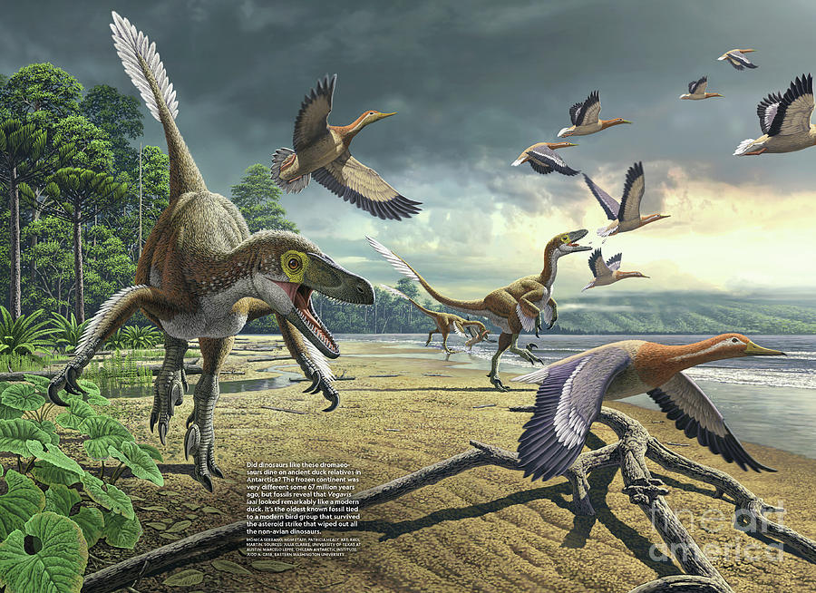

De donde vienen?
Los patos, como grupo, se originaron hace millones de años, durante el período Cretácico tardío o el Paleógeno temprano. Se cree que los primeros ancestros de los patos modernos evolucionaron en regiones del hemisferio norte, particularmente en Eurasia o América del Norte, donde se desarrollaron diversos ecosistemas acuáticos. Desde entonces, los patos se han diversificado ampliamente y se encuentran en casi todo el mundo. Su capacidad para migrar y adaptarse a diferentes hábitats les ha permitido expandirse globalmente y formar una gran variedad de especies con características únicas.
Ancentros: los dinosaurios modernos?
Los fósiles más antiguos relacionados con este grupo datan del período Cretácico tardío, cuando los dinosaurios aún dominaban la Tierra. Uno de los posibles ancestros primitivos de los patos es Vegavis iaai, un ave fósil descubierta en la Antártida, que vivió hace unos 66 millones de años. Se cree que este antiguo ave tenía características comunes con los patos modernos. Con el tiempo, los patos evolucionaron y se diversificaron, desarrollando las características que conocemos hoy, como sus patas palmeadas, sus picos especializados y su capacidad para migrar grandes distancias.


Habitantes de agua dulce!
- Lagos y estanques: Muchos patos, como el ánade real, habitan en aguas tranquilas y poco profundas.
- Humedales: Zonas pantanosas y marismas son ideales para su alimentación y reproducción.
- Ríos y arroyos: Especialmente aquellos con flujo lento, donde pueden nadar y buscar comida.
- Zonas costeras: Algunas especies, como los patos marinos, se adaptan a vivir en las costas y en el océano abierto.
- Parques urbanos: Hoy en día, es común ver patos en parques o reservas naturales donde hay estanques o lagos artificiales.
Y la dieta?
La dieta de los patos depende de su especie y del entorno en el que viven, pero en general son omnívoros, lo que significa que comen tanto plantas como pequeños animales. Además, los patos en parques urbanos suelen comer pan y otros restos que las personas les ofrecen, aunque no siempre es lo mejor para su salud.
Salud, la esperanza de vida pautna
La esperanza de vida de los patos varía dependiendo de la especie y su entorno. En promedio:
- Patos silvestres: Pueden vivir entre 5 y 10 años en la naturaleza, aunque enfrentan amenazas como depredadores y cambios ambientales que pueden reducir su vida.
- Patos domésticos: Con cuidados adecuados, suelen vivir más tiempo, llegando a los 10 o incluso 15 años. Factores clave: Su dieta, refugio y protección contra enfermedades son cruciales para extender su vida.
El amor en los estanques
Los patos tienen relaciones amorosas bastante interesantes y, en muchos casos, muy complejas.
- Formación de parejas: En muchas especies de patos, los machos suelen competir para atraer a las hembras a través de despliegues llamativos, como movimientos, colores brillantes en su plumaje y vocalizaciones.
- Monogamia temporal: Aunque algunas aves son monógamas de por vida, los patos suelen formar parejas solo durante la temporada de reproducción. Esto significa que la relación no es permanente y se rompe al finalizar esta etapa.
- Roles en la crianza: En la mayoría de los casos, las hembras son las que se encargan de construir los nidos, incubar los huevos y cuidar a los polluelos. Los machos suelen alejarse después de que la hembra comienza la incubación.
- Diversidad de comportamiento: Algunas especies tienen comportamientos únicos en sus relaciones. Por ejemplo, los ánades reales (mallards) son conocidos por su agresividad en la formación de parejas.